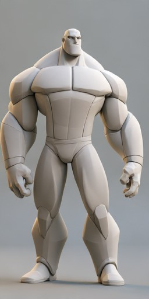
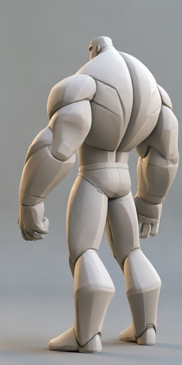
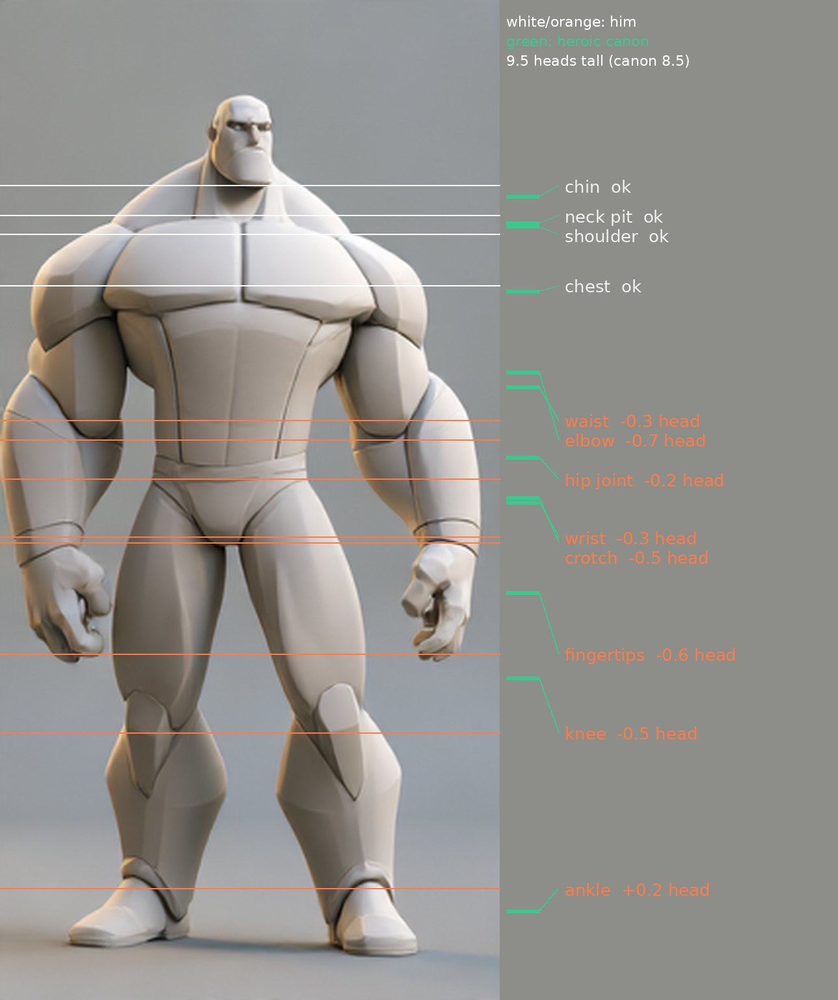

One exact figure: your grey, blocky, heroic man. We build him with what the Bruiser Study learned. Turnaround first, a depth ruler, an anatomy base, then big flat planes. Every round is shown beside your picture from the same camera.
Anatomy check done; modeling starts after your Bruiser feedback
Your figure · front
Your figure · backHis front view measured against a heroic human (Loomis and the Marvel Way, from the Bodies study canon). Lines on him are where his joints sit; green marks are where a heroic man's would be.

Measured by hand from the 512-pixel picture, about 3 pixels either way. The camera is slightly low, so his legs may read a little long, not short. The side view from the turnaround will settle depth.
Your prompt, word for word, with your figure attached so Midjourney keeps him. You pick the sheet; the model is then scored from all three sides.
front, side, back views of the same figure, a grey 3d ultra low polygon count, blocky, heroic male figure in a traditional A pose on a gray backdrop, each view is exactly the same character, wearing tight fitted briefs
The method from the Bruiser Study. If your feedback changes the winner, this follows it.